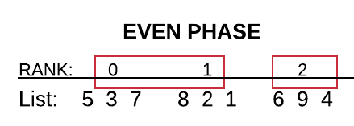
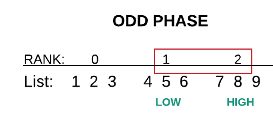

Odd Even Transposition Sort¶
Algorithm¶
The odd even transposition sort is a variation of bubble sort. Like in bubble sort, elements of a list are compared pairwise and swapped when necessary. However, these compare-swaps are done in two phases: odd and even. Suppose that a is a list of integers. The compare-swaps for the phases are as follows
Odd phase: (a[1], a[2]),(a[3], a[4]), (a[5],a[6]), …
Even phase: (a[0], a[1]),(a[2], a[3]), (a[4],a[5]), …
The algorithm guarantees that for a list with n elements, after n phases the list will be sorted. the list may be sorted with fewer phases, but it will always be sorted after n phases. Below is a simple example for reference.
List: 6, 2, 7, 4
| Phase | Compare-Swap | Resulting List |
|---|---|---|
| Odd | Compare-swap (2,7)
|
6, 2, 7, 4
|
| Even | Compare-swap (6,2) and (7,4)
|
2, 6, 4, 7
|
| Odd | Compare-swap (6,4)
|
2, 4, 6, 7
|
| Even | Compare-swap (2,4) and (6,7)
|
2, 4, 6, 7
|
Parallelization¶
We begin by deciding how to split up the work of sorting list a. If we have n elements in the list and p processes, then naturally each process should receive n/p elements. To sort the local elements in each process, we can use a fast serial sorting algorithm like quicksort (qsort). Now we are left with independent processes that each contain a local portion of sorted elements. If each process had only one element, we could go about the odd even sort easily. Processes 1 and 2 would exchange their elements for an odd phase and so on. We will apply this logic to our parallel version. We will have process 1 and 2 exchange all of their elements with process 1 keeping the smallest half of the elements. Continuing this for all n phases will result in sorted elements stored in processes of increasing rank.
The parallel odd even transposition sort depends on the number of process to guarantee a sorted list. If a sort is run on p processes, then after p phases the list will be sorted. Example below.
List: 5, 3, 7, 8, 2, 1, 6, 9, 4
| Phase | Process 0 | Process 1 | Process 2 |
|---|---|---|---|
| Begin | 5, 3, 7 | 8, 2, 1 | 6, 9, 4 |
| After Local Sort | 3, 5, 7 | 1, 2, 8 | 4, 6, 9 |
| Odd | 3, 5, 7 | 1, 2, 4 | 6, 8, 9 |
| Even | 1, 2, 3 | 4, 5, 7 | 6, 8, 9 |
| Odd | 1, 2, 3 | 4, 5, 6 | 7, 8, 9 |
Code¶
file: MPI_examples/oddEvenSort/mpi_odd_even.c
The code for this example is from Peter Pacheco’s book, An Introduction to Parallel Programming. For further implementations and reading corresponding to this example, refer to his book which is listed below.
- Book: An Introduction to Parallel Programming, Peter Pacheco, Morgan Kaufmann Publishers, 2011
Build inside mpi_odd_even directory:
make oddEvenSort
Execute on the command line inside oddEvenSort directory:
mpirun -np <number of processes> ./mpi_odd_even
Main Function
int main(int argc, char* argv[]) {
int my_rank, p; // rank, number processes
char g_i; // holds either g or i depending on user input
int *local_A; // local list: size of local number of elements * size of int
int global_n; // number of elements in global list
int local_n; // number of elements in local list (process list)
MPI_Comm comm;
double start, finish, loc_elapsed, elapsed;
MPI_Init(&argc, &argv);
comm = MPI_COMM_WORLD;
MPI_Comm_size(comm, &p);
MPI_Comm_rank(comm, &my_rank);
Get_args(argc, argv, &global_n, &local_n, &g_i, my_rank, p, comm);
local_A = (int*) malloc(local_n*sizeof(int));
// generate random list based on user input
if (g_i == 'g') {
Generate_list(local_A, local_n, my_rank);
Print_local_lists(local_A, local_n, my_rank, p, comm);
}
// read in user defined list from command line
else {
Read_list(local_A, local_n, my_rank, p, comm);
//# ifdef DEBUG
Print_local_lists(local_A, local_n, my_rank, p, comm);
//# endif
}
# ifdef DEBUG
printf("Proc %d > Before Sort\n", my_rank);
fflush(stdout);
# endif
MPI_Barrier(comm);
start = MPI_Wtime();
Sort(local_A, local_n, my_rank, p, comm);
finish = MPI_Wtime();
loc_elapsed = finish-start;
MPI_Reduce(&loc_elapsed, &elapsed, 1, MPI_DOUBLE, MPI_MAX, 0, comm);
# ifdef DEBUG
Print_local_lists(local_A, local_n, my_rank, p, comm);
fflush(stdout);
# endif
Print_global_list(local_A, local_n, my_rank, p, comm);
free(local_A); // deallocate memory
if (my_rank == 0) printf("Sorting took %f milliseconds \n", loc_elapsed*1000);
MPI_Finalize();
return 0;
} /* main */
| Comments: |
|
|---|
User Input¶
The following command is entered on the command line for running the executable.
usage: mpirun -np <p> mpi_odd_even <g|i> <global_n>
For this example, users must enter the number of processes (p) as well as the number of elements for the list (global_n) as command line arguments. Users also have a choice of whether to have the program sort a randomly generated list (g) or an input list (i). For our purposes, we will stick to using randomly generated lists.
Odd Even Sorting¶
There are several functions that play an integral role in sorting including Sort, Compare, Odd_even_iter, Merge_low and Merge_high. We will walk through each function and describe what is being done. The following diagrams follow from a starting list of 5, 3, 7, 8, 2, 1, 6, 9, 4.
Sort¶
From main, each process calls and sends the appropriate arguments to Sort. In the Sort function, we begin by allocating some memory needed later on for merging the local lists. Then, we determine the odd and even phase partner of the current process which has rank my_rank. We will need to know this in order to do the odd-even phase swaps. If we have a process whose rank is odd, it has two possible partners. Its even phase partner will have a rank of my_rank - 1 where as its odd phase partner will have a rank of my_rank + 1. Similarly, a process whose rank is even will have an even phase partner with rank my_rank + 1 and an odd phase partner of rank my_rank + 1.
Even phase: An even rank will have a partner of rank my_rank + 1. An odd rank will a partner of rank my_rank - 1.
Odd phase: An even rank will a partner of rank my_rank - 1. An odd rank will have a partner of rank my_rank + 1.

Next, we sort the local list using qsort with the basic Compare function. Lastly, we loop through all possible phases (p phases). For each phase, the function Odd_even_iter is called which performs one iteration of the odd-even transposition between local lists. Lastly, all temporary memory is deallocated.

void Sort(int local_A[], int local_n, int my_rank,
int p, MPI_Comm comm) {
int phase;
int *temp_B, *temp_C;
int even_partner; /* phase is even or left-looking */
int odd_partner; /* phase is odd or right-looking */
/* Temporary storage used in merge-split */
temp_B = (int*) malloc(local_n*sizeof(int));
temp_C = (int*) malloc(local_n*sizeof(int));
/* Find partners: negative rank => do nothing during phase */
if (my_rank % 2 != 0) { /* odd rank */
even_partner = my_rank - 1;
odd_partner = my_rank + 1;
if (odd_partner == p) odd_partner = MPI_PROC_NULL; // Idle during odd phase
} else { /* even rank */
even_partner = my_rank + 1;
if (even_partner == p) even_partner = MPI_PROC_NULL; // Idle during even phase
odd_partner = my_rank-1;
}
/* Sort local list using built-in quick sort */
qsort(local_A, local_n, sizeof(int), Compare);
# ifdef DEBUG
printf("Proc %d > before loop in sort\n", my_rank);
fflush(stdout);
# endif
for (phase = 0; phase < p; phase++)
Odd_even_iter(local_A, temp_B, temp_C, local_n, phase,
even_partner, odd_partner, my_rank, p, comm);
// deallocate memory
free(temp_B);
free(temp_C);
} /* Sort */
Compare¶
The compare function is very simple. It compares two integers and is used solely by qsort to sort each local list.
Odd_even_iter¶
We will discuss this function in two parts: even phase and odd phase. In both cases, we check to make sure that the current process has the necessary partner needed for the swap. If there are an odd number of processes, there is a chance that one process will not have a partner to swap with. This check ensures that we will not run into an error in this situation.
void Odd_even_iter(int local_A[], int temp_B[], int temp_C[],
int local_n, int phase, int even_partner, int odd_partner,
int my_rank, int p, MPI_Comm comm) {
MPI_Status status;
if (phase % 2 == 0) { /* even phase */
if (even_partner >= 0) { /* check for even partner */
MPI_Sendrecv(local_A, local_n, MPI_INT, even_partner, 0,
temp_B, local_n, MPI_INT, even_partner, 0, comm,
&status);
if (my_rank % 2 != 0) /* odd rank */
// local_A have largest local_n ints from local_A and even_partner
Merge_high(local_A, temp_B, temp_C, local_n);
else /* even rank */
// local_A have smallest local_n ints from local_A and even_partner
Merge_low(local_A, temp_B, temp_C, local_n);
}
} else { /* odd phase */
if (odd_partner >= 0) { /* check for odd partner */
MPI_Sendrecv(local_A, local_n, MPI_INT, odd_partner, 0,
temp_B, local_n, MPI_INT, odd_partner, 0, comm,
&status);
if (my_rank % 2 != 0) /* odd rank */
Merge_low(local_A, temp_B, temp_C, local_n);
else /* even rank */
Merge_high(local_A, temp_B, temp_C, local_n);
}
}
} /* Odd_even_iter */
Even phase: As long as the process has an even partner, we can proceed. The even_partner is sent and received by previously allocated memory, temp_B. temp_B is needed for merging. This is done using the MPI function MPI_Sendrecv. MPI_Sendrecv is a thread-safe function to send and receive a message in a single call. If we have an odd rank process, we want the local list for this process to merge with its even_partner so that it will contain the largest elements between the two. Otherwise, the process has an even rank and we will merge the smallest elements between the current process and its even_partner to the current process’local list. Below is a diagram following from the above list.

Odd Phase: Once again, if we have an odd phase and the process has an odd partner, the odd_partner is sent and received by previously allocated memory, temp_B. An odd rank process will merge with its odd_partner so that its local list will have the smallest elements between the two. Similarly, the local list of an even rank process will contain the largest elements.
Merge_low and Merge_high¶
The Merge_low and Merge_high functions take part in the comparison swap between the local lists of processes. Temporary allocated memory is necessary for a merge to take place. We fill temporary storage variable temp_C with the smallest or highest elements respectively from both the local list and temp_B (partner) of a process. The elements from temp_C are then copied into the local list.
Print Functions¶
There are several print functions that serve to make printing various lists easier. The two main printing functions include Print_global_list and Print_local_list.
- Print_global_list function: Prints a global list of all elements by gathering together elements from each local list. The master process uses the MPI function MPI_Gather to collect each local_A list from all processes. It then stores the components in global list A.
- Print_local_lists: Prints a local list for each process using helper function Print_list. The master process begins by printing its local list of elements. Next, the master process alternates between receiving a local list from another process and printing it until all processes have had their lists printed.

{kind=link}
{kind=link}